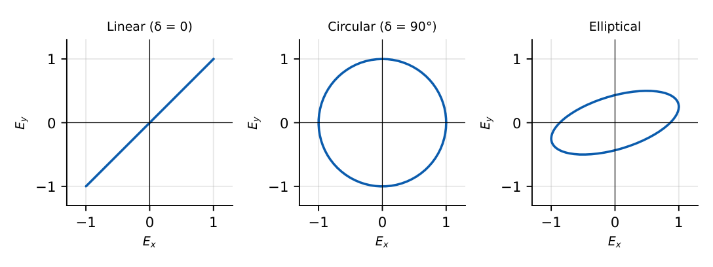

Uniform Plane Waves
In this chapter
\(\beta\), \(\lambda\), \(v_p\), \(\eta\) in a lossless medium; polarization states; the three media regimes (lossless, low-loss, good conductor) with attenuation constant and skin depth; phase versus group velocity.
5.1 Uniform plane waves in a lossless medium
A uniform plane wave has \(\vE\) and \(\vH\) perpendicular to each other and to the direction of propagation, with constant amplitude on planes normal to it (TEM). For \(\vE=E_x(z)\ar_x\):
\(E_x=E_0e^{-j\beta z}\), \(\ H_y=\dfrac{E_0}{\eta}e^{-j\beta z}\), \(\ \vE\times\vH\) points along \(+z\).
\(\beta=\omega\sqrt{\mu\eps}=\dfrac{\omega}{c}\sqrt{\mu_r\eps_r}\), \(\ v_p=\dfrac{\omega}\beta=\dfrac1{\sqrt{\mu\eps}}=\dfrac c{\sqrt{\mu_r\eps_r}}\), \(\ \lambda=\dfrac{2\pi}\beta=\dfrac{v_p}f\).
\(\eta=\sqrt{\dfrac\mu\eps}=377\sqrt{\dfrac{\mu_r}{\eps_r}}\ \Omega\); free space \(\eta_0=377\,\Omega\). \(E\) and \(H\) are in phase.
In real time \(\vE=E_0\cos(\omega t-\beta z)\ar_x\) travels in \(+z\); \(\cos(\omega t+\beta z)\) travels in \(-z\).
\(f=100\,\)MHz: in air \(\lambda=3\,\)m. In a medium with \(\eps_r=9\), \(\mu_r=1\): \(v_p=c/3\), \(\beta=\frac{2\pi\times10^8\times3}{3\times10^8}=2\pi=6.28\) rad/m, \(\lambda=1\,\)m, \(\eta=377/3=125.7\,\Omega\).
5.2 Polarization

Let \(\vE=E_x\cos(\omega t-\beta z)\ar_x+E_y\cos(\omega t-\beta z+\delta)\ar_y\).
| Polarization | Condition | Tip of \(\vE\) |
|---|---|---|
| Linear | \(\delta=0\) or \(\pi\) (or one component zero) | straight line |
| Circular | \(E_x=E_y\), \(\delta=\pm90^\circ\) | circle |
| Elliptical | any other | ellipse |
Sense (looking toward the receding wave from the source, IEEE convention): \(\delta=+90^\circ\) (with \(E_y\) leading \(E_x\)) is left-handed (LHCP) for a \(+z\) wave; \(\delta=-90^\circ\) is right-handed. Two orthogonal circular components of equal amplitude combine into linear polarization; unequal amplitudes into elliptical.
5.3 Propagation through various media
\(\gamma=\alpha+j\beta=\sqrt{j\omega\mu(\sigma+j\omega\eps)}\), \(\ \eta_c=\sqrt{\dfrac{j\omega\mu}{\sigma+j\omega\eps}}\) (complex: \(\vE\) and \(\vH\) out of phase).
\(E_x=E_0e^{-\alpha z}e^{-j\beta z}\); amplitude decays by \(e^{-1}\) in \(1/\alpha\); \(1\) neper \(=8.686\) dB.
Low-loss dielectric (\(\sigma/\omega\eps\ll1\)): \(\alpha\approx\dfrac\sigma2\sqrt{\dfrac\mu\eps}\), \(\beta\approx\omega\sqrt{\mu\eps}\), \(\eta\approx\sqrt{\mu/\eps}\).
Good conductor (\(\sigma/\omega\eps\gg1\)): \(\alpha=\beta=\sqrt{\pi f\mu\sigma}\), \(\ \eta_c=(1+j)\sqrt{\dfrac{\pi f\mu}{\sigma}}=\dfrac{1+j}{\sigma\delta}\) (\(45^\circ\) phase, \(\vE\) leads \(\vH\)), \(\ v_p=\omega/\beta=\omega\delta\).
5.4 Skin depth
\(\delta=\dfrac1\alpha=\dfrac1{\sqrt{\pi f\mu\sigma}}\) (good conductor). Fields and current density decay as \(e^{-z/\delta}\); at \(z=\delta\) the amplitude is \(36.8\%\) of the surface value, at \(5\delta\) under \(1\%\). \(\delta\propto1/\sqrt f\).
AC resistance of a wire (radius \(\gg\delta\)): current concentrates in a layer of thickness \(\delta\), so \(R_{ac}\approx\dfrac{\ell}{\sigma\,2\pi a\,\delta}\). Surface resistance \(R_s=\dfrac1{\sigma\delta}\).
Copper at \(1\,\)MHz: \(\delta=\frac1{\sqrt{\pi\cdot10^6\cdot4\pi\times10^{-7}\cdot5.8\times10^7}}=66\,\mu\)m; at \(100\,\)MHz \(\delta=6.6\,\mu\)m. The skin depth equals \(1\,\)mm at \(f\approx4.4\,\)kHz.
5.5 Phase velocity and group velocity
\(v_p=\dfrac\omega\beta\), \(\ v_g=\dfrac{d\omega}{d\beta}\). In a nondispersive medium \(\beta\propto\omega\) so \(v_p=v_g\).
Dispersive example (hollow waveguide): \(v_p=\dfrac c{\sqrt{1-(f_c/f)^2}}>c\), \(v_g=c\sqrt{1-(f_c/f)^2}<c\), \(v_pv_g=c^2\). \(v_g\) is the speed of energy and information; \(v_p\) can exceed \(c\) without violating relativity.
(i) \(\eta\) in a dielectric is smaller than \(377\,\Omega\) (\(377/\sqrt{\eps_r}\) for \(\mu_r=1\)). (ii) In a good conductor \(\alpha=\beta\) and \(\vE\), \(\vH\) are not in phase. (iii) Skin depth falls as \(1/\sqrt f\). (iv) Circular polarization needs equal amplitudes and \(90^\circ\) phase. (v) \(v_p>c\) in a waveguide is not the signal speed.
\(\beta=2\pi/\lambda\) and \(\lambda=c/(f\sqrt{\eps_r})\). Power density \(=E_0^2/(2\eta)\). For skin-depth questions memorise copper: \(\delta=66\,\mu\mathrm m/\sqrt{f_{MHz}}\). For polarization write the two components and read off the amplitude ratio and phase difference.
5.6 GATE problems
Q1. A \(100\,\)MHz wave in free space has wavelength (A) 0.3 m (B) 3 m (C) 30 m (D) 1 m.
Q2. The intrinsic impedance of free space is about (A) 50 \(\Omega\) (B) 75 \(\Omega\) (C) 377 \(\Omega\) (D) 3 k\(\Omega\).
Q3. Circular polarization requires (A) equal amplitudes and \(0^\circ\) phase (B) unequal amplitudes and \(90^\circ\) phase (C) equal amplitudes and \(90^\circ\) phase (D) equal amplitudes and \(180^\circ\) phase.
Q4. Phase velocity in a lossless medium with \(\eps_r=4\), \(\mu_r=1\) is (A) \(c\) (B) \(c/2\) (C) \(2c\) (D) \(c/4\).
Answers: Q1 (B). Q2 (C). Q3 (C). Q4 (B).
Q5. \(\vE=10\cos(2\pi\times10^8t-\beta z)\ar_x\) in a medium with \(\eps_r=9\), \(\mu_r=1\). \(\beta\) is (A) 2.09 rad/m (B) 6.28 rad/m (C) 18.8 rad/m (D) 0.7 rad/m.
Q6. Intrinsic impedance of a lossless medium with \(\eps_r=4\), \(\mu_r=1\) is (A) 94 \(\Omega\) (B) 188.5 \(\Omega\) (C) 377 \(\Omega\) (D) 754 \(\Omega\).
Q7. If the skin depth of copper at \(1\,\)MHz is \(66\,\mu\)m, at \(100\,\)MHz it is (A) \(660\,\mu\)m (B) \(66\,\mu\)m (C) \(6.6\,\mu\)m (D) \(0.66\,\mu\)m.
Answers: Q5 (B). Q6 (B). Q7 (C): \(\delta\propto1/\sqrt f\), factor \(10\).
Q8. A wave in free space has \(|\vE|=37.7\) V/m (amplitude). \(|\vH|\) amplitude (A/m): .
Q9. Average power density (W/m\({}^2\), two decimals) for \(E_0=100\) V/m in free space (\(\eta_0=377\,\Omega\)): .
Q10. Frequency (kHz, two decimals) at which the skin depth of copper (\(\sigma=5.8\times10^7\) S/m, \(\mu_r=1\)) is \(1\,\)mm: .
Answers: Q8: \(37.7/377=0.1\). Q9: \(\frac{10^4}{2\cdot377}=13.26\). Q10: \(f=\frac1{\pi\mu\sigma\delta^2}=4.37\) kHz.
Q11. In a good conductor: (A) \(\alpha=\beta\) (B) \(\eta_c\) has a \(45^\circ\) phase (C) the wave decays over a distance \(\delta\) (D) the phase velocity equals \(c\).
Answers: Q11: (A), (B), (C).
T1. \(\eta\) for \(\eps_r=9\)? T2. Skin depth formula? T3. Relation between \(v_p\) and \(v_g\) in a waveguide?
Answers: T1: \(377/3=125.7\,\Omega\). T2: \(1/\sqrt{\pi f\mu\sigma}\). T3: \(v_pv_g=c^2\).
- \(\beta=\omega\sqrt{\mu\eps}\), \(v_p=1/\sqrt{\mu\eps}\), \(\eta=\sqrt{\mu/\eps}\), \(\lambda=2\pi/\beta\).
- Circular: \(E_x=E_y\), \(\delta=\pm90^\circ\); linear \(\delta=0\); else elliptical.
- \(\gamma=\sqrt{j\omega\mu(\sigma+j\omega\eps)}\); low-loss \(\alpha\approx\frac\sigma2\eta\).
- Good conductor \(\alpha=\beta=1/\delta=\sqrt{\pi f\mu\sigma}\), \(\eta_c=\frac{1+j}{\sigma\delta}\).
- \(v_g=d\omega/d\beta\); \(S_{av}=E_0^2/(2\eta)\).